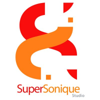

Expérience Mes Stages
DRIEAT
Développeur Fullstack
Durée : 2 mois
Date : Janvier - Février 2025
Missions:
- Développement Back-End (PHP, VB,VBA)
- UI/UX (Figma, AdobeXD)
- Homologation document (Rédaction conformité)
- Interview et analyse besoin métier (MOE)
DRIEAT
Chef de projet SI
Durée : 2 mois
Date : Mai - Juin 2024
Missions:
- Développement Back-End (PHP, VB,VBA)
- UI/UX (Figma, AdobeXD)
- Homologation document (Rédaction conformité)
- Interview et analyse besoin métier (MOE)
JM Bruneau Benelux
Assistant administrateur réseaux
Durée : 2 mois
Date : Janvier - Février 2023
Missions:
- Gestion des demandes d'incidents (JiraTicketing)
- Dépannage et conseils aux utilisateurs
- Configuration systèmes, OS via LAN
PC Maestro IRLANDE
Technicien Informatiques
Durée : 2 mois
Date : Novembre - Décembre 2024
Stage en IRLANDE
- Suite à l’obtention d’une bourse Erasmus + ma motivation m’a amené un effectuer un stage dans le domaine de l’informatique d’une durée de 1 mois à Cork, la deuxième plus grande ville d’Irlande pour améliorer mes compétences technique et linguistique.
SuperSonique Studio
Assistant de Communication marketing et développement web
Durée : 2 mois
Date : Juin - Juillet 2020
Missions:
- WordPress.org
- Gestion suivie et relation client
- Suite adobe (PremièrePro, Photoshop)
- Suite office (Word, Excel)
- Gestion Réseau sociaux clients et programmation de media planning (Instagram, facebook, linkedin...)